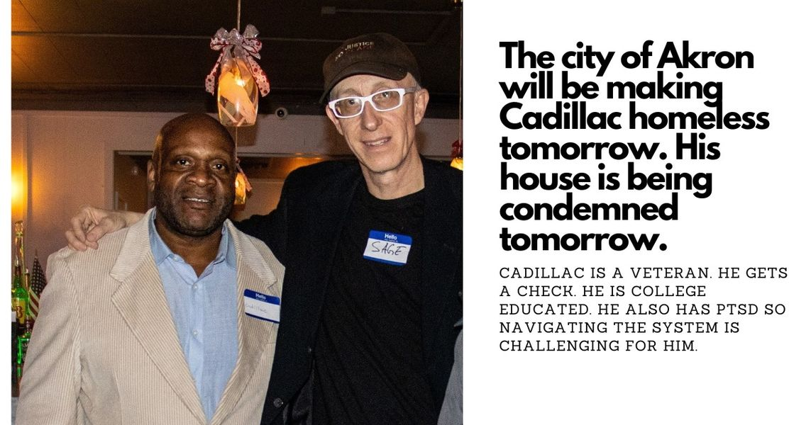

Timeline photos
Our house will officially be condemned tomorrow. September 1, 2023.
But that hasn’t stopped city workers from coming by ahead of time to intimidate and harass Cadillac… the veteran who lives there.
A few days ago he wrote me a really panicked message about this encounter, the $75 rental application fees he’s facing and this looming arbitrary deadline where he’ll be homeless. He has ptsd. Sometimes I can really feel it weigh on him.
I saw him yesterday. He looked much calmer than the message I received. But he talked in more detail about this city worker interaction. He said that they threatened to call the police on him even though he has every right to be in that house. And then they said that they told him that they would bring the bulldozers themselves to tear down the house.
I won’t be at all surprised if our house gets fast tracked on the demolition list. The city is doing everything in its power to wipe away any evidence that they are cruel and careless stewards of their most vulnerable citizens.
Cadillac then started telling me about how they were talking to him like he was some sort of illiterate loser. He has lived in other countries, is college educated, is an advanced member of Toastmasters. He was saying it as if to remind even himself that he is not what they were implying he was.
My leftist friends have a consistent crusade to abolish the police. It’s their primary directive most of the time. But let me just say this: throughout this entire encounter there has only been one person actively trying to help Cadillac find housing. It’s not any homeless service providers. It’s certainly not the city who is throwing him out of his house. I’m not even doing a good job. It’s just been this one cop: Officer Wagner. He has been so respectful, so sensitive to the entire process. And so have the other officers that have come by. He has been working with veteran services to try to find a place for Cadillac. I haven’t seen one single other person come by to try to help Cadillac. (These posts get a lot of views. You can’t say you didn’t know this was happening. YOU KNEW AND YOU DIDN’T DO ANYTHING. But isn’t that how we humans fail over and over again?)
It has just been Officer Wagner.
That’s been my experience with all police. 80% of the time they are empathic, calm and very professional. A canine officer who is a woman came by last week. I think it’s important to say she was a woman because, like it or not, sometimes a woman can express empathy and compassion much better than a man. She was so wonderful.
But there is one nuisance inspector who is truly evil. He truly gets off on punishing poor people. He lives in Tallmadge and makes it his personal mission to make poor Akron people’s lives miserable. I wouldn’t be at all surprised if he was the guy terrorizing Cadillac early this week.
And these are what my leftist friends want more of. They want more housing inspectors to punish no good landlords. Meanwhile, the inspectors are picking and choosing who they target, not by housing violations, but by personal vendettas. It isn’t that police are innately bad. It’s that there are bad people and they wield their evil influence by moving into positions of power like police, housing inspections, teachers and clergy.
I’m a no good landlord. My house is a mess. Doors kicked in, windows broken, screens gone, no smoke detectors or carbon monoxide detectors, clogged toilets, mice and cockroaches. By every account I fit the bill. But there is another side of that story: police and one insane homeless guy keep kicking in our front door. I can’t put it back up fast enough. I replaced 6 windows only to have them broken out again within a week. I’m pretty sure the screens were scrapped. People are constantly jamming things (most recently sunglasses) in the toilet. They ALWAYS take batteries out of the smoke detectors. Those are the kind of people I feel called to shelter… mentally ill homeless drug addicts are my people. My people just aren’t particularly ready to live in a house. Any normal landlord would have thrown them out months ago. It’s probably better that we go back to the woods and abandoned houses.
(In our defense: all our utilities are on. All the drains are currently open and flowing. We actively try to kill the bugs. It’s not raining indoors. We keep food waste out of the house for the most part. I honestly was pretty pleased for how good we all were doing in that house given the circumstances.)
Do they honestly think they are making everyone’s life safer and better by condemning that house? People will inevitably sneak in. They will probably make fires in the house to stay warm. They will pee and poop on the floor. It will become filled with trash which will lead to more bugs and mice and rats. It probably will burn down one day. We can just hope that no one gets stuck in it when that happens.
There are countless abandoned and condemned houses in Akron. The city doesn’t have nearly enough money to tear them down. So they just sit there becoming worse and worse and worse.
The obvious, common sense answer to all this is: first, make sure the tenants you are trying to protect by condemning their house all have a place to live before you throw them out on the street. Second, don’t condemn a house that you can’t demolish. The policies we currently have in play make everything WAY WAY worse than if you did nothing at all.
A woman wrote me yesterday and said she had to unfollow me because the pain I’m putting out here is too much. She has her own suffering and this is too much weight. She is so right to back off of all this. And please do the same if I’m hurting you too much.
I’m just in the part of the story that is really dark and heavy right now.
My current feeling and narrative is that it’s all broken. Police can’t police themselves. Housing inspectors are destroying people’s homes as some sort of vindictive vendetta towards poor people. Churches are dying and consequently are protecting their worst leaders and ideals. Communists are confused about how human beings actually function. Capitalists just want to force us to consume highly suspect vaccinations while trying to figure out which group of people they can grind up next with their war machines. And the government is completely incompetent. I’d love to think they are some evil puppet masters. But it’s much worse than that. They have no earthly idea how to fix our problems.
But I keep coming back to one small glimmer of hope. It’s fragile. It’s timid. It questions itself constantly in a sweet insecure way. It’s you. You the individual. Not you in a group (that almost instantly destroys your beauty). You the single human being. You know what needs to be done. You know the truth. I have deep hope because I see you for who you really are.
The story isn’t hopeless. Even though this chapter is heavy and heartbreaking, the story isn’t over. The story isn’t hopeless. I think we will find redemption one day. I certainly won’t live to see it. But I believe very strongly that it will come. And it will come from simple individual people just like you.